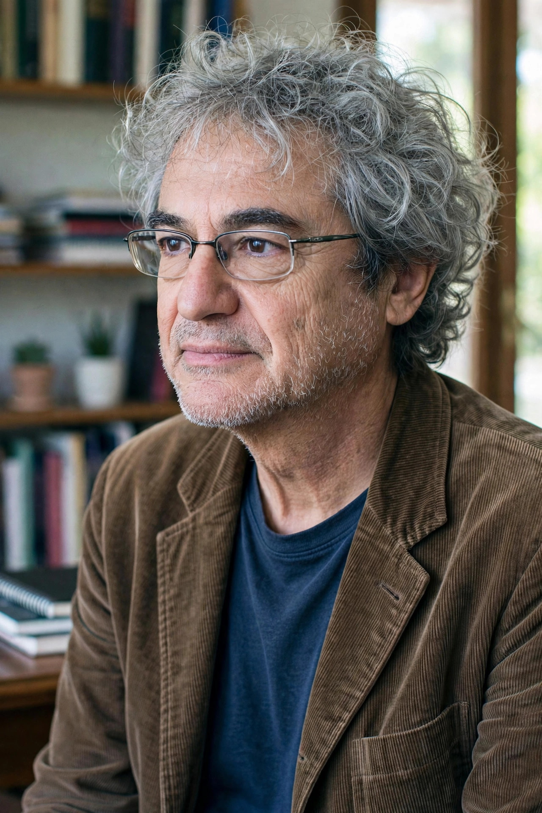

| Born | 3 May 1956 Verona, Italy |
|---|---|
| Alma mater | University of Bologna University of Padua |
| Known for | Loop quantum gravity Relational quantum mechanics Thermal time hypothesis |
| Notable works | Seven Brief Lessons on Physics (2014) |
| Fields | Theoretical physics |
| Institutions | Aix-Marseille University, Perimeter Institute |
Carlo Rovelli (born 3 May 1956) is an Italian theoretical physicist and writer. He has worked in Italy, the United States and, since 2000, in France, currently at Aix-Marseille University, where he heads the quantum gravity group at the Centre de physique théorique. He is one of the founders of loop quantum gravity and is also widely known for his popular science books.
With Lee Smolin and Abhay Ashtekar, Rovelli developed loop quantum gravity, in which space itself is quantised: geometric quantities such as area and volume have discrete spectra, and spacetime is described by spin networks evolving as spin foams. In 1996 he proposed relational quantum mechanics, an interpretation holding that the state of a system is meaningful only relative to another system. With Alain Connes he formulated the thermal time hypothesis, suggesting that time emerges from thermodynamics rather than being fundamental. His 2020 book Helgoland defends this relational view of the quantum world.
Rovelli's Seven Brief Lessons on Physics (2014) became an unexpected international bestseller, translated into dozens of languages, outselling many novels in Italy. He followed it with Reality Is Not What It Seems (2014), The Order of Time (2017), a reflection on the nature of time praised for its lyricism, and Anaximander, on the birth of scientific thought. In 2019 Foreign Policy magazine named him one of the 100 most influential global thinkers.